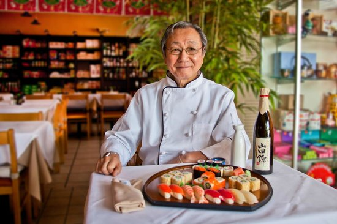

SOBRE NOSOTROS
Nuestra historia se remonta con el Gran Chef oriental Otoshi Samikama quien paso a su familia la tecnica y las recetas para que puedas disfrutar del mejor Sushi. Otoshi inmortalizo su labor en unos tomos que han sobrevivido incontables disputas durante el periodo Edo, y luego encontro su lugar en una persona llamada Akira Samikama, el actual dueño de Okabe Sushi. Desde el año 2004 estamos brindando nuestro servicio de gastronomia en forma de catering para fiestas y eventos empresariales asi como para paladares mas exclusivos con nuestro amplio menú de mano del Chef Sakuragi el cual ha venido a nuestro pais con el solo fin de hacerle llegar a todos los habitantes el abanico de sabores que tiene su arte.
